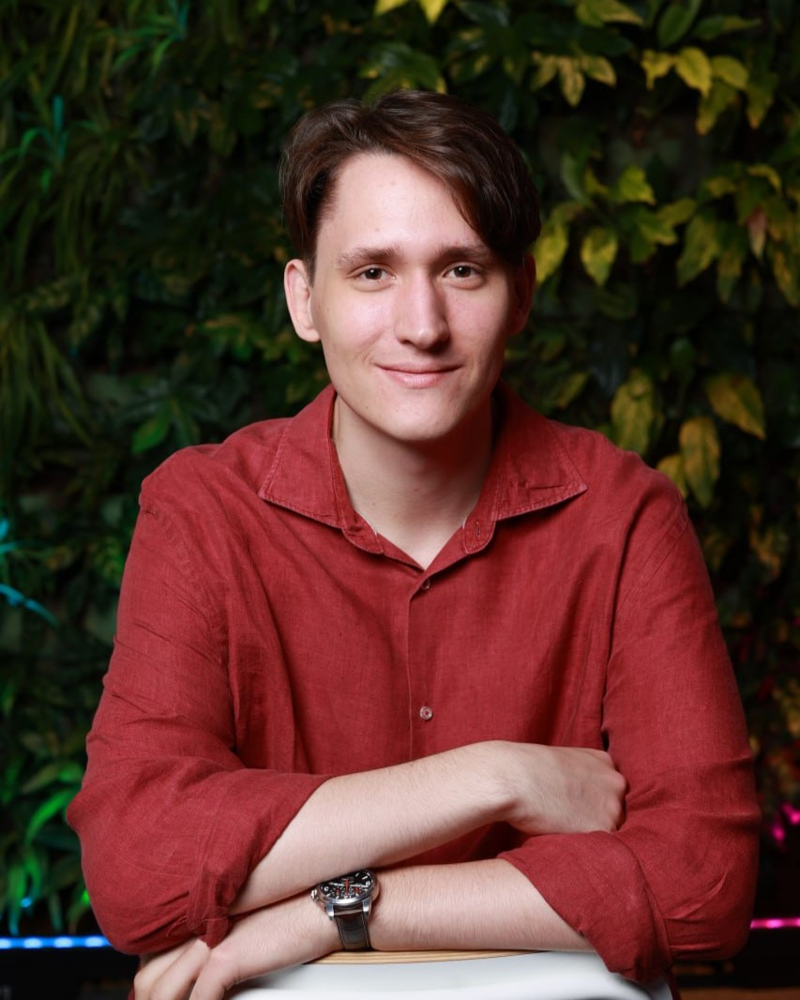
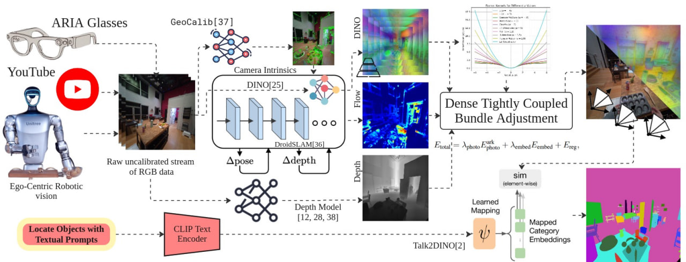
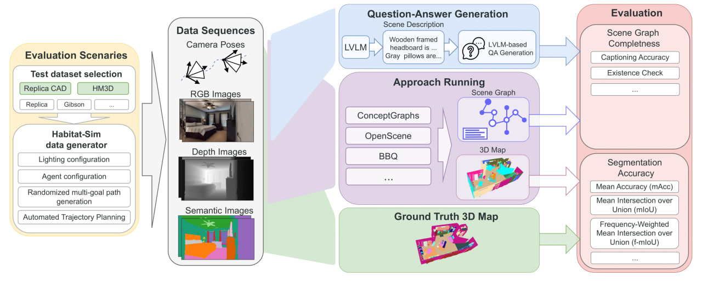

|  |
Maxim PopovI am a PhD student in Artificial Intelligence at ITMO University, where I am advised by Prof. Sergey Kolyubin. Master's degree also from ITMO University and Bachelor's degree from BMSTU. My current research focuses on 3D scene understanding and embodied AI. I'm looking for chances to team up with scientists from all over the world. Feel free to write me if you're interested. 📚 Google Scholar | 💻 GitHub | 💼 LinkedIn | 📧 Email |
* Full publication list available on Google Scholar
|  |
KM-ViPE: Online Tightly Coupled Vision-Language-Geometry Fusion for Open-Vocabulary Semantic SLAM
Zaid Nasser, Mikhail Iumanov, Tianhao Li, Maxim Popov, Jaafar Mahmoud, Malik Mohrat, Ilya Obrubov, Ekaterina Derevyanka, Ivan Sosin, Sergey Kolyubin Preprint, 2025 |
|  |
OSMa-Bench: Evaluating Open Semantic Mapping Under Varying Lighting Conditions
Maxim Popov, Regina Kurkova, Mikhail Iumanov, Jaafar Mahmoud, Sergey Kolyubin International Conference on Intelligent Robots and Systems (IROS), 2025 |